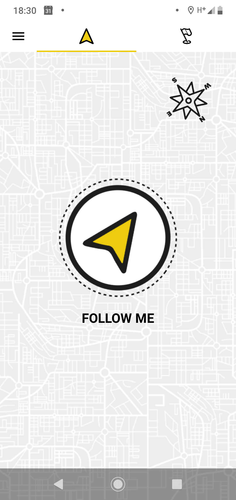
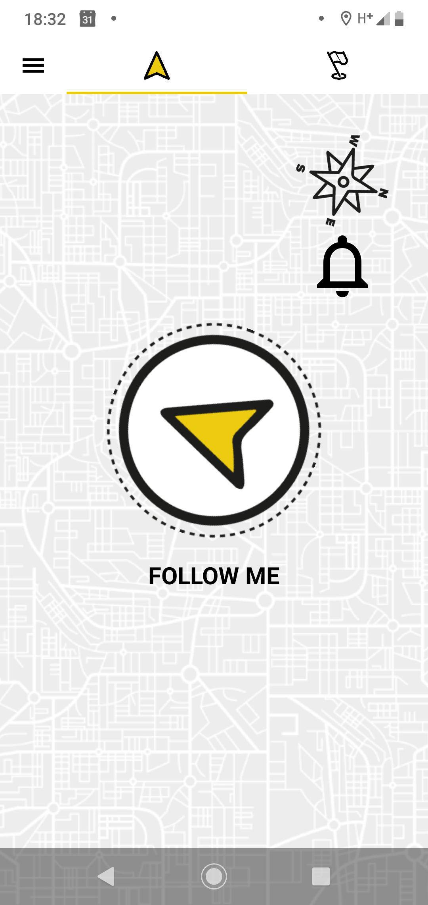
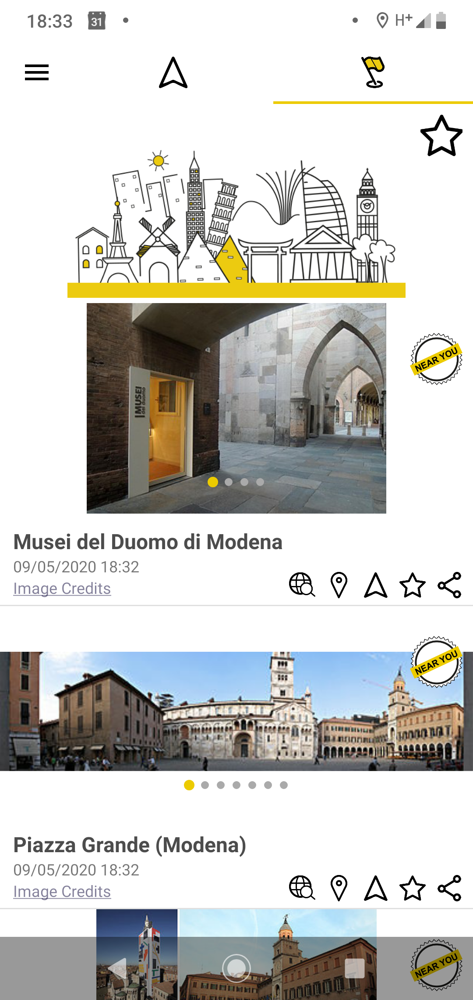
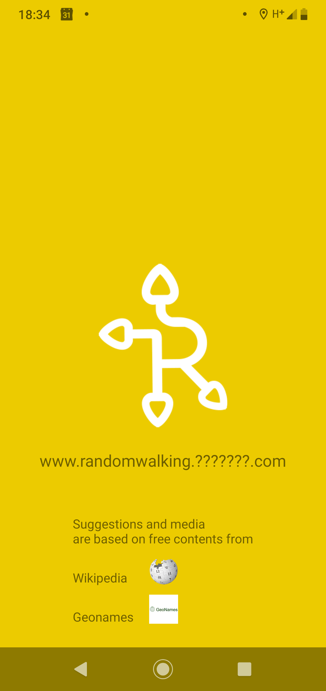

Cos'è RandomWalking?
“In viaggio la cosa migliore è perdersi. Quando ci si smarrisce, i progetti lasciano il posto alle sorprese, ed è allora, ma solamente allora, che il viaggio comincia”
Nicolas Bouvier
RandomWalking è l’app per permetterti di scoprire ciò che ti circonda in completa autonomia.
Dimentica ogni mappa e cammina a testa alta.
“La meta è partire”
Giuseppe Ungaretti
Con RandomWalking non è necessario programmare il tuo itinerario. Dovrai solo decidere di partire e goderti la passeggiata.
“Un buon viaggiatore non ha piani precisi, il suo scopo non è arrivare”
Lao Tzu
Scegli la semplicità: apri RandomWalking e lasciati guidare verso la direzione indicata. Sfrutta i suggerimenti ma scegli seguendo il tuo istinto.
Ma, di preciso...cos’è RandomWalking?
RandomWalking è l’app creata per guidarti alla scoperta delle meraviglie che ti circondano.
A differenza di un navigatore o di una guida turistica si basa su alcuni concetti fondamentali:
Immediatezza: non dovrai programmare il tuo viaggio ma solo lasciarti guidare.
Semplicità: RandomWalking non ti offrirà un percorso né un programma ma solo una direzione verso cui orientarti.
Libertà: Sarai tu, in ogni momento, a scegliere la tua via. I suggerimenti si adatteranno alle tue decisioni.
Semplicità: RandomWalking non ti offrirà un percorso né un programma ma solo una direzione verso cui orientarti.
Libertà: Sarai tu, in ogni momento, a scegliere la tua via. I suggerimenti si adatteranno alle tue decisioni.
Come?
Ricordi che doveva essere semplice?

Apri RandomWalking e lascia guidare i tuoi passi verso la direzione indicata. Guardati attorno e scopri in totale libertà le attrazioni che ti circondano.

Quando raggiungerai un punto di particolare interesse o un’attrazione nelle vicinanze, ti verrà segnalato. Intanto l’indicatore principale continuerà a suggerirti come proseguire la tua esplorazione.

Una volta raggiunte, RandomWalking scoprirà le attrazioni che aveva trovato per te. Approfittane per ricordare le tappe più belle della tua esplorazione.
